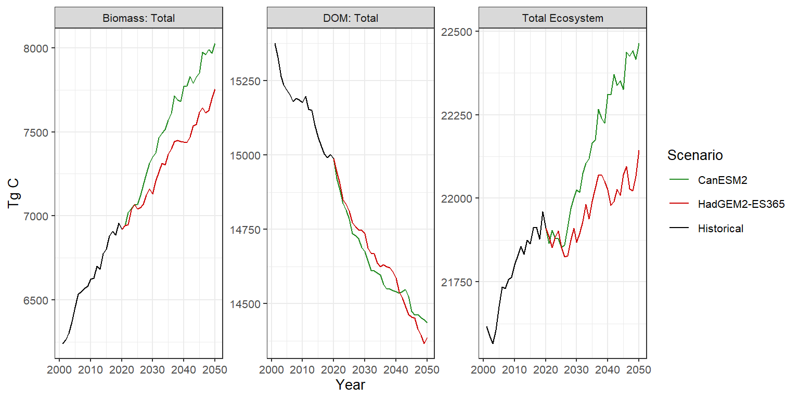

Chapter 4 Net change in ecosystem carbon storage between 2001 and 2020
Between 2001 and 2020, TEC increased from 52,027 MMT C to 54,392 MMT C, resulting in a total forest carbon sink of 2,365 MMT C over the 19-year period. On an annualized basis, the net forest carbon sink was 51,653.74 MMT C yr-1.
By 2020, carbon stored in live pools increased to 18,810 MMT C while DOM pools remained relatively stable. However, the net change in the overall amount of DOM masked important internal dynamics within DOM pools (Table 4.1). For example, carbon stored in standing dead snags increased by 202 MMT C while soil pools declined by -408 MMT C.
|
Year
|
Change
|
|||
|---|---|---|---|---|
| Stock | 2001 | 2020 | MMT C | % |
| Aboveground live | ||||
| Biomass: Foliage [Type] | 881.5 | 949.6 | 68.2 | 7.7 |
| Biomass: Merchantable [Type] | 7859.7 | 9461.5 | 1601.8 | 20.4 |
| Biomass: Other Wood [Type] | 4306.0 | 4827.3 | 521.2 | 12.1 |
| Total | 13047.1 | 15238.4 | 2191.2 | 16.8 |
| Belowground live | ||||
| Biomass: Coarse Root [Type] | 2689.4 | 3090.9 | 401.5 | 14.9 |
| Biomass: Fine Root [Type] | 464.6 | 480.4 | 15.7 | 3.4 |
| Total | 3154.1 | 3571.3 | 417.2 | 13.2 |
| Deadwood | ||||
| DOM: Aboveground Medium [Type] | 1488.9 | 1295.8 | -193.1 | -13.0 |
| DOM: Belowground Fast [Type] | 246.9 | 253.0 | 6.1 | 2.5 |
| DOM: Snag Branch [Type] | 238.6 | 282.6 | 44.0 | 18.5 |
| DOM: Snag Stem [Type] | 756.9 | 958.9 | 202.0 | 26.7 |
| Total | 2731.3 | 2790.4 | 59.0 | 2.2 |
| Litter | ||||
| DOM: Aboveground Fast [Type] | 1382.9 | 1435.2 | 52.3 | 3.8 |
| DOM: Aboveground Very Fast [Type] | 856.0 | 908.9 | 52.9 | 6.2 |
| Total | 2238.9 | 2344.1 | 105.2 | 4.7 |
| Soil | ||||
| DOM: Aboveground Slow [Type] | 7140.2 | 6846.8 | -293.4 | -4.1 |
| DOM: Belowground Slow [Type] | 23572.1 | 23457.6 | -114.5 | -0.5 |
| DOM: Belowground Very Fast [Type] | 143.3 | 143.5 | 0.2 | 0.2 |
| Total | 30855.6 | 30447.9 | -407.7 | -1.3 |
| Note: | ||||
| The Aboveground Slow pool has been included with the IPCC Soil pool rather than the Litter pool as done in the CBM-CFS3 model. | ||||
Net losses in live biomass carbon were concentrated in three western U.S. ecoregions (Sierra Nevada Mountains, Klamath Mountains, Cascades), primarily the result recent high rates wildfire. All other ecoregions in the U.S. were net sinks of live carbon (Figure 4.1). The Middle Rockies and Northern Rockies ecoregions were large sinks of live carbon resulting primarily from regrowth following high rates of historical disturbance which occurred prior to 2001. Consequently, these regions also experienced significant net declines in litter and deadwood pools as stocks decomposed over time.

Figure 4.1: Net change in carbon pools by ecoegion for the period 2001-2020.
Changes in LULC and disturbance (LULC-D) were an important driver of carbon stock change. Figure 4.2 shows the net change in carbon pools a climate only scenario (“Clim”), a LULC and disturbance only scenario (“LULC”), a LULC and climate scenario (“LULC+Clim”) and a scenario where neither climate or LULC effects were considered (“Ref”). When the effects of LULC-D were included in simulations, increases in live carbon were modest (2,608 MMT C) relative to simulations without LULC-D (5,537 MMT C). Furthermore, incorporating changes in LULC-D resulted in relatively larger increases in litter and deadwood relative to simulations without LULC-D. Wildfire and forest harvest transitions result in large fluxes of carbon from live to DOM pools, either the result of root and branch biomass left on-site after harvest or through mortality of live vegetation. The subsequent increases in DOM pools post-disturbance provide large quantities of carbon as inputs to the soil pool over time. Excluding LULC-D changes from the model results in large declines in SOC relative to scenarios where LULC-D are considered. In total, the inclusion of LULC/disturbances in simulations reduced the total size of the net carbon sink in the conterminous US by 53%>% compared to simulations where only the effects of climate were considered. Results show that while climate was the primary driver of inter-annual variability in the annual net flux of carbon 4.3, LULC and disturbance were the primary controlling processes governing the magnitude of ecosystem carbon storage and flux in the United States.
Figure 4.2: Net change in carbon stocks between 2001-2020. The ‘Clim’ scenario includes only the effects from climate variability and change; ‘LULC’ assumes only effects from land use and disturbances; ‘LULC+Clim’ includes both LULC and climate effects, and ‘Ref’ assumes no effects from either LULC or climate.
4.1 Net carbon flux
For the period 2001-2020, U.S. forests were on average, a net sink of carbon at a rate of 132 MMT C yr-1. Figure 4.3 shows the estimated net primary productivity (NPP), heterotrophic respiration (Rh), net ecosystem productivity (NEP) and net biome productivity (NBP) over time for each of the four simulations. The size of the net sink varied considerably from year-to-year, ranging from -22 MMT C yr-1 (source) to 242 MMT C yr-1 (sink). Climate was the primary driver of inter-annual variability in the size of the forest sink. When climate was not included in simulations, the size of the net sink ranged from 67 to 200 MMT C yr-1 and showed a declining trend over time due to the absence of increased productivity from recent climate conditions. Land use, land-use change, and disturbances were the primary controlling processes effecting the magnitude of the net carbon sink. When LULC was excluded, the forest carbon sink was 49% higher (mean of 271 MMT C yr-1) than simulations where LULC was included.
Net primary productivity (NPP) of U.S. forests averaged 1,238 MMT C yr-1. Incorporating the effects of LULC and disturbances reduced total NPP by 49 MMT C yr-1 while incorporating the effects of climate resulted in an increase in NPP of 9 MMT C yr-1 compared to the LULC only simulation. These results suggest that LULC and disturbance have a negative impact on NPP while climate variability and change between 2001-2020 have resulted in increased productivity of U.S. forests. Heterotrophic respiration (Rh) increased under all simulations resulting from increases in productivity and climate warming.

Figure 4.3: Net fluxes of carbon in conterminous U.S. forests for the period 2002-2020. Need to delete this part…
4.2 Effects of LULC and disturbance
Table 4.2 shows the emission, harvest, and mortality fluxes for the LULC and disturbances transitions considered in this study. Carbon losses from LULC and disturbances reduced the annual forest carbon sink by 81 MMT C yr-1 on average. The cumulative loss of carbon sequestration was primarily from the transfer of carbon to harvested wood products (67 MMT C yr-1) with clearcut harvest accounting for more than 90% of the carbon removal from ecosystems. Harvest activities also resulted in a similar amount of carbon transferred from live to DOM pools.
Ecosystem carbon losses from combustion averaged 14 MMT C yr-1, with wildfire accounting for 65% of all LULC and disturbance related emissions; emissions from urbanization and agricultural expansion accounted for 27% and 8%, respectfully. Emissions from wildfire were highly variable from year-to-year. However, the three highest fire emission years all occurred since 2017. In 2020, wildfire burned ~3.7 million hectares, primarily in California and Oregon, an amount 0% greater than the historical average. Emissions were estimated to be 45.93 MMT C (168.58 MMT CO2), which were more then three times the historical average.
In addition to ecosystem carbon removals, LULC and disturbances resulted in the transfer of an additional 94 MMT C yr-1 from live to DOM pools which will contribute to future years reductions in the carbon sink through their decay and decomposition. This future flux could be accelerated by continued increases in the turnover rate of DOM resulting from climate warming.
| TransitionGroupID | Transition Type | Emission | Harvest | Mortality | Transfer |
|---|---|---|---|---|---|
| Ag Expansion | Ag Expansion: Cropland | 0.56 | 0.42 | 0.25 | — |
| Ag Expansion: Pasture | 0.55 | 0.48 | 0.25 | — | |
| Total | 1.11 | 0.90 | 0.50 | — | |
| Urbanization | Urbanization: High | 0.21 | 0.08 | — | — |
| Urbanization: Medium | 0.70 | 0.26 | — | — | |
| Urbanization: Low | 1.19 | 0.44 | — | — | |
| Urbanization: Open | 1.75 | 0.67 | — | — | |
| Total | 3.85 | 1.45 | — | — | |
| Forest Harvest | Forest Harvest: Forest Clearcut | — | 62.02 | 59.68 | 7.13 |
| Forest Harvest: Forest Selection | — | 2.19 | 2.14 | — | |
| Total | — | 64.21 | 61.82 | 7.13 | |
| Fire | Fire: High Severity | 3.81 | — | 7.60 | 6.89 |
| Fire: Medium Severity | 2.26 | — | 4.73 | 2.39 | |
| Fire: Low Severity | 3.16 | — | 6.89 | 2.08 | |
| Total | 9.23 | — | 19.22 | 11.36 | |
| Insect | Insect: High Severity | — | — | 6.09 | — |
| Insect: Medium Severity | — | — | 4.95 | — | |
| Insect: Low Severity | — | — | 6.24 | — | |
| Total | — | — | 17.29 | — |
4.3 Projections of carbon change
For the western U.S., we projected future carbon storage and flux between 2020 and 2050 under for two climate models under the RCP 4.5 radiative forcing scenario. We used the CanESM2 and HADGEM2-ES365 downscaled climate futures for RCP 4.5 to project changes in carbon storage and flux for U.S. forested ecosystems. Climate data from the Coupled Model Inter-comparison Project (CMIP5) were downscaled using the Multivariate Adaptive Constructed Analogs (MACA) (Abatzoglou and Brown (2012)). Downscaled climate data were used to produce annual spatial flow multipliers used to scale vegetation growth and the decay and decomposition of DOM at the pixel level. MACA data were downscaled from their native ~4km resolution to 1km using a bilinear method. Future LULC and disturbances were sampled, with replacement, from historical rates of change following methods described in Benjamin M. Sleeter et al. (2019). Additional details are described in the methods section.
Total ecosystem carbon storage was projected to continue to increase under both climate model simulations, with larger gains realized under the CanESM2 model as opposed to HadGEM2-ES365. However, the projected net carbon sink rate under both models was projected to be lower than that of the historical period. The
